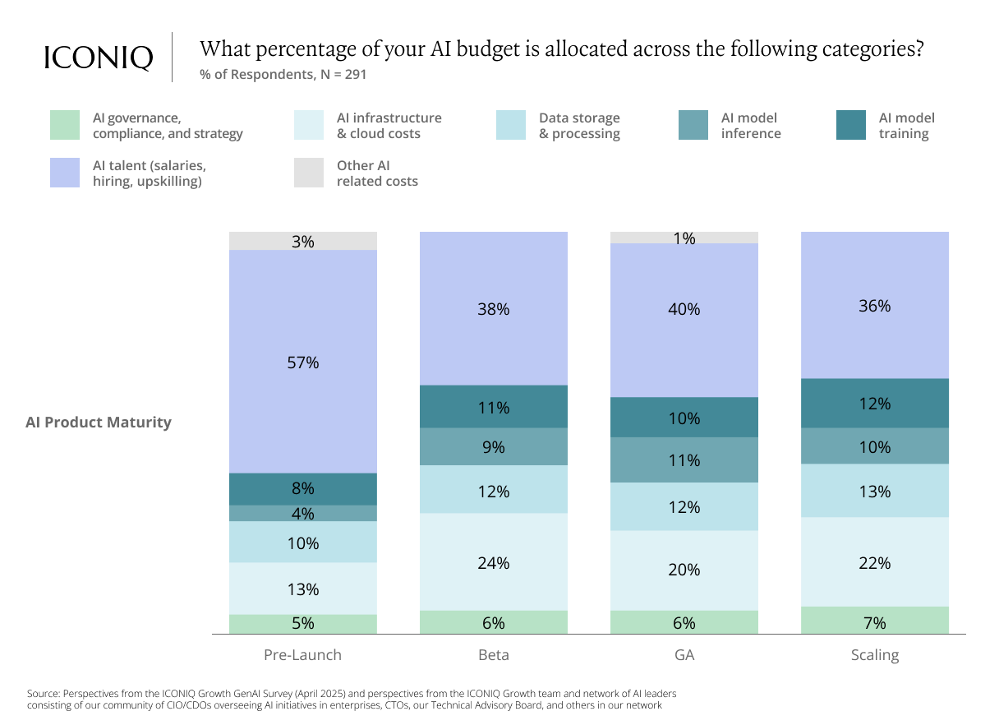
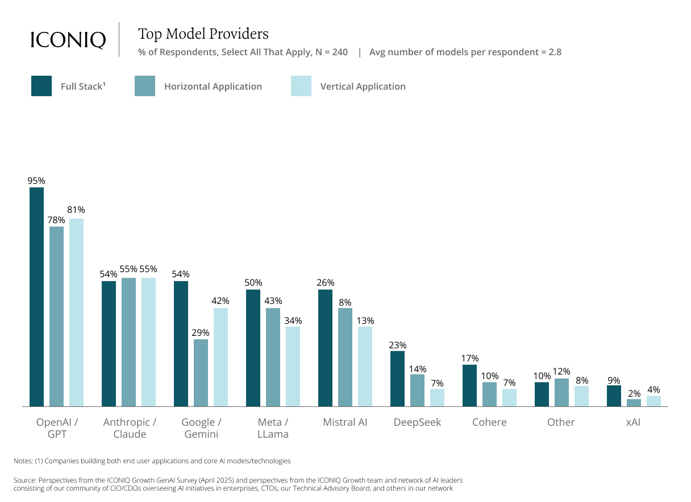
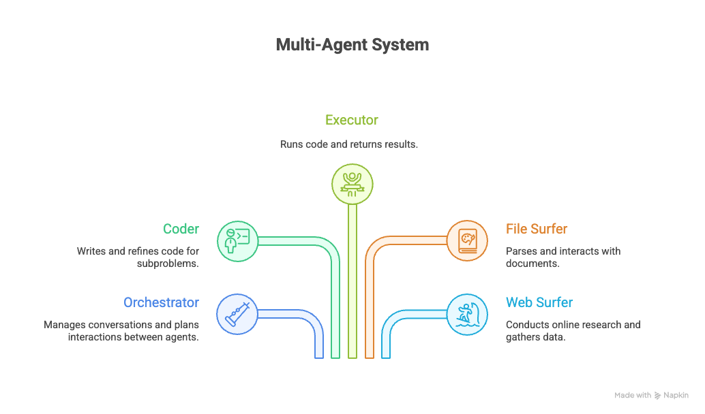
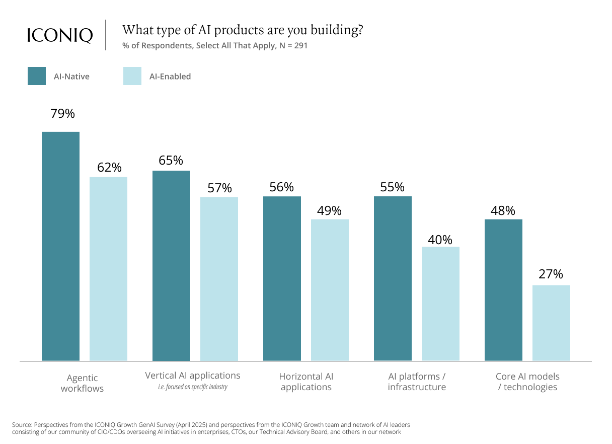
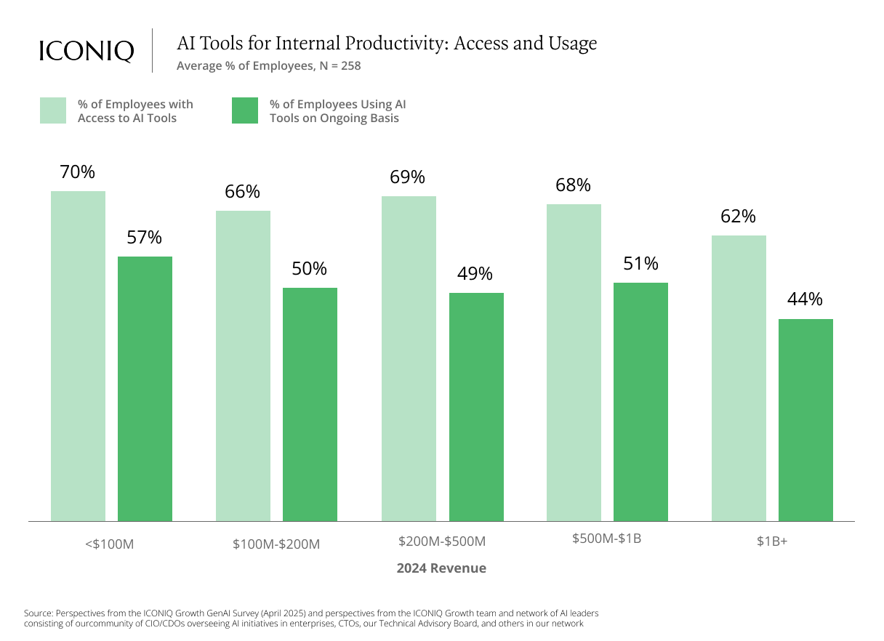
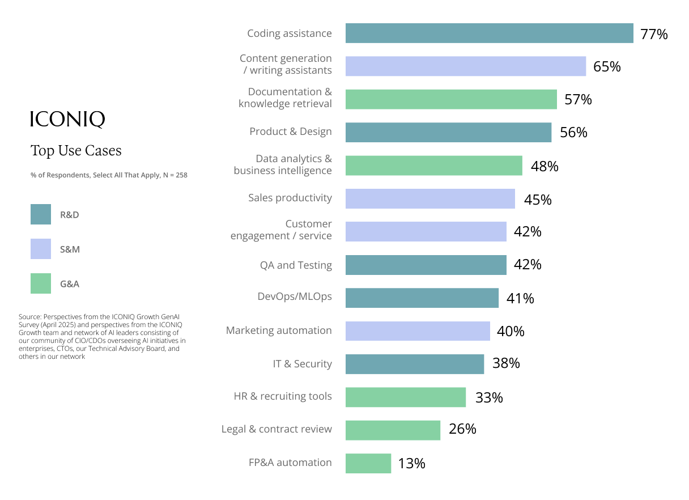
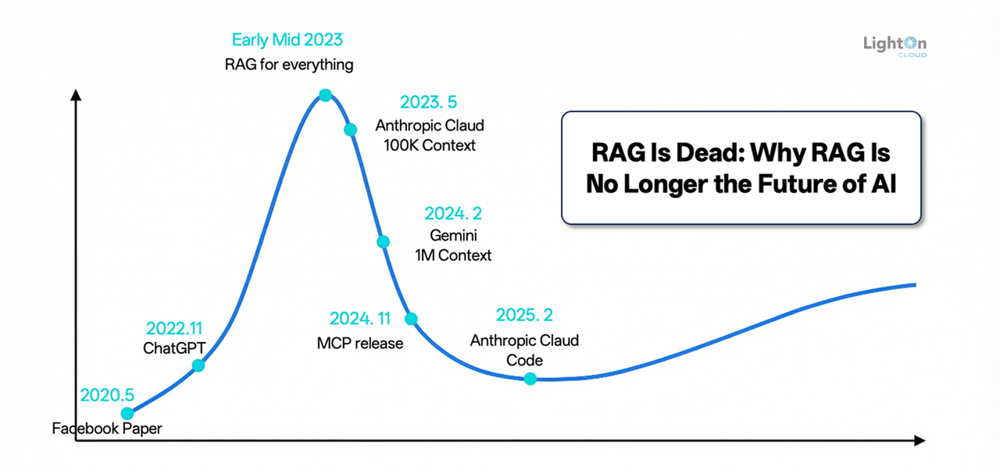
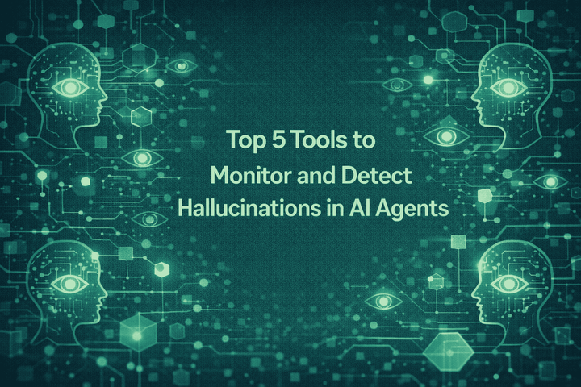
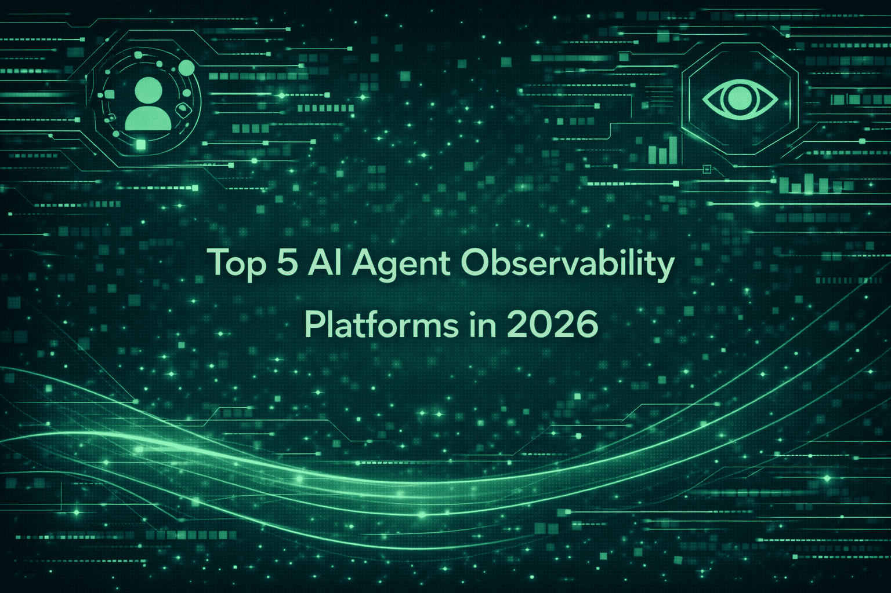
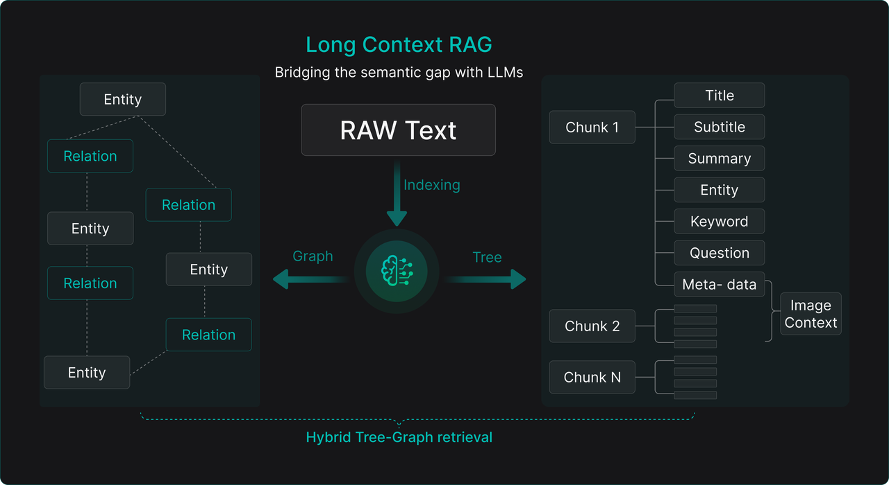

2025 Trends, Applied AI Challenges, and What to Look Forward to in 2026
What was the real breakthrough of 2025?
It wasn't just new model releases.
Models got better, but that wasn't what moved the needle for teams actually shipping AI.
It was plumbing.
Standards emerged. Integration got easier. The boring work of making agents actually work finally started paying off. The unglamorous infrastructure work became the competitive advantage.
The teams that shipped weren't the ones with the best models.
They weren't stuck contemplating which model to use. They knew how to connect everything together:and that's what mattered.
A Few Honest Lessons from 2025
Most of your time goes to integration. Not prompts, not model selection:connecting systems and handling edge cases.
Reliability beats capability. A predictable system is far better than something accurate but chaotic.
The model is the easy part. The hard part is everything around it:context, tools, evaluation, deployment.
Start narrower than you think. Build up to complex agents: making 10-step agents on day one only makes debugging harder.
What Most Teams Build
Impressive demos
Works in notebooks, fails in production. 95% never ship.
→
What Actually Ships
Boring reliability
Predictable, observable, recoverable. Does less, works always.
The Applied AI Stack
Four layers of the stack, plus the challenges that cut across all of them
What We'll Cover
Input Layer : From prompts to context engineering, MCP, and multimodal
Model Layer : Foundation models, long context, RLVR, fine-tuning, and hybrid reasoning
Application Layer : Agents that actually ship, tool calling, and patterns that work
Output Layer : Trust as engineering, reliability math, and security frameworks
What's Still Broken : Hallucinations, RAG stagnation, and the production gap
Road Ahead : What 2026 looks like and how to prepare
Section 1
Input Layer
From Prompt Craft to Context Engineering
What Changed in the Input Layer
Prompt engineering → Context engineering. The focus shifted from crafting clever prompts to structuring the right information.
MCP standardized integration. Custom connectors gave way to a universal protocol for AI-to-tool communication.
Multimodal became table stakes. Images, audio, and video as inputs moved from experimental to expected.
Tool descriptions matter. How you describe tools to models determines whether they use them correctly.
Remember when everyone was selling prompt templates?
Companies hired dedicated prompt engineers at $150-300K. Marketplaces sold "proven" templates for hundreds of dollars. Every AI implementation started with weeks of prompt tuning.
From Prompt Engineering to Context Engineering
2024: Smart tricks to phrase prompts better. Brittle, model-specific, hard to maintain.
2025: Models improved enough that careful phrasing mattered less.
Meta-prompting emerged: Ask the model to generate your prompts.
Automatic prompt optimization: Tools that improve prompts without human iteration.
The shift: Less about clever wording, more about what information the model needs.
Humans no longer needed to master prompt tricks: the focus moved to structuring the right context.
AI systems need to interact with the world beyond text generation. This requires tools.
Tools are functions that AI systems can invoke: APIs, database queries, file operations, external services.
The model doesn't execute tools directly
It generates structured JSON describing which tool to call and with what parameters
Your system executes the actual function and returns results
The challenge: Every AI provider had its own tool calling format. Every integration was custom. This fragmentation slowed adoption and increased complexity.
Semantic clarity: Distinguish similar operations (delete vs archive, update vs replace)
Parameter constraints: Min/max values, allowed enums, format requirements
Keep it small: Fewer than 20 tools at a time; use tool search for larger sets
But tools alone weren't enough.
Every AI needed custom integrations to every tool. OpenAI had one format. Anthropic another. Google yet another. Building tools meant building them N times for N providers. The industry needed standardization.
Every AI integration used to be a custom engineering project.
Want to connect your AI to Slack? Build a connector. GitHub? Another connector. Your database? Yet another. Each integration was weeks of work, fragile, and broke whenever either side updated.
The M×N Integration Problem
Every AI application needed custom connectors to every data source. 10 apps × 10 sources = 100 integrations to build and maintain.
MCP: The M+N Solution
With MCP as a standard protocol, you build M + N connectors instead of M × N. Same 10 apps + 10 sources = 20 integrations.
MCP: How It Gained Traction
November 2024: Anthropic launches MCP as an open standard. Downloads: ~100K.
March 2025: OpenAI officially adopts MCP. The industry takes notice.
April 2025: Google DeepMind announces MCP support. Downloads hit 8 million.
Throughout 2025: Thousands of MCP servers built. Enterprise adoption accelerates.
What started as an Anthropic project became the industry standard in under a year.
The Protocol Wars of 2025
April 2025: Google launches Agent-to-Agent (A2A) protocol with 50+ partners including Salesforce, SAP, and MongoDB.
The industry worried: another standards war?
MCP: Agent ↔ Tools. How AI connects to data sources and external systems.
A2A: Agent ↔ Agent. How autonomous agents communicate with each other.
Although designed to be complementary, either protocol could expand to absorb the other's functionality. The boundaries weren't as clear as the marketing suggested.
MCP + A2A = Complete Agent Infrastructure
Tools + Coordination: both protocols solving different problems
December 2025: The Wars End
Anthropic donates MCP to the Linux Foundation's new Agentic AI Foundation. Founding members: Anthropic, OpenAI, Google, Microsoft, AWS. The standard is now truly vendor-neutral, and the industry has a shared foundation to build on.
Where MCP Stands Today
Model Context Protocol is now the standard way to connect AI systems to data sources.
What MCP provides:
Standardized interface for AI clients to access any data source
Built-in security and permission models
Thousands of pre-built connectors in the ecosystem
Version compatibility guarantees
Works across model providers (OpenAI, Anthropic, Google, open source)
If you're still building bespoke connectors, stop. The engineering time you'll save is significant.
What MCP Means for You
Stop building custom connectors. Thousands of MCP servers exist. Check the registry before writing integration code.
Your integrations become portable. Switch model providers without rewriting connection logic.
It's vendor-neutral now. Linux Foundation governance means no single company controls the spec.
The ecosystem is production-ready. 50+ enterprise vendors have native support. This isn't experimental.
If you're still building bespoke data connectors in 2025, you're wasting engineering time.
The MCP Story: From Launch to Linux Foundation
From Anthropic project to industry standard in just over a year
Text-only AI systems are legacy.
In 2024, processing images alongside text was a differentiator. In 2025, it's table stakes. Systems that only handle text are increasingly inadequate for real-world use cases.
Multimodal: Real Use Cases
Customer Service
Process screenshots with complaint tickets. Analyze product photos for damage claims. Read receipts for returns. Text-only support can't handle these.
Code & Development
Code review tools read architecture diagrams. Understand UI mockups. Parse whiteboard photos from meetings. Development assistance that can't see is limited.
Enterprise Workflows
Medical systems analyze labs, imaging, and notes together. Legal tools process contracts with signatures. Finance parses statements and charts simultaneously.
Where Your Time Actually Goes
20% on model selection and prompts. The part everyone focuses on in tutorials.
30% on integration and deployment. API wrappers, error handling, gradual rollout.
50% on infrastructure and tooling. Observability, cost tracking, prompt versioning.
High-growth companies allocate 37% of engineering to AI. Most of that isn't the "AI part":it's the infrastructure around it.
Where AI Budgets Actually Go

Pre-launch: 57% goes to AI talent. Scaling: 36% goes to model inference. Budget allocation shifts dramatically as AI products mature.
Input Layer: Key Takeaways
Stop optimizing prompts. Start optimizing context. Context engineering beats prompt engineering for reliability and maintainability.
Adopt MCP before building another custom connector. The ecosystem is mature enough for production use. The custom integration tax is over.
Invest in tool descriptions. 60-70% of agent failures trace back to poor tool definitions. Include examples and edge cases.
Plan for multimodal now. If your AI system only handles text, you're building technical debt.
Section 2
Model & Data Layer
The models got better. The hard part is choosing and running them.
What Changed in the Model Layer
RLVR changed the game. DeepSeek R1 showed you can train reasoning without human labels:just verifiable rewards.
Open source closed the gap. Qwen, Llama, and Mistral models became genuinely competitive with proprietary options.
Multi-model became normal. Teams now average 2.8 models per product:routing by task, cost, and latency.
Vertical fine-tuning proved its value. Domain-specific models in healthcare, legal, and finance delivered real ROI.
DeepSeek R1 was the technical story of 2025.
Not because of benchmarks:R1 actually underperformed some existing models on standard tests. What mattered was the training approach: Reinforcement Learning with Verifiable Rewards.
How RLVR Works
1. Problem
Math proof, code task, logic puzzle
→
2. Model Attempts
No hints, no demonstrations
→
3. Verify
Did the code compile? Proof valid?
↓Binary reward: right or wrong↓
✓ Correct
Reinforce this reasoning path
✗ Wrong
Discourage this approach
Through thousands of iterations, the model develops its own reasoning strategies:no human-written chain-of-thought required.
RLVR vs RLHF: What Changed
RLHF (Old Way)
Feedback: Human annotators rank outputs
Reward: "Did a human like this?"
Scaling: Limited by human labeling speed
Cost: $$ per data point
Result: Models that sound good
Good for: Helpfulness, tone, avoiding harm
RLVR (New Way)
Feedback: Automated verification
Reward: "Is this provably correct?"
Scaling: Limited only by compute
Cost: Cents per data point
Result: Models that are correct
Good for: Code, math, logic, verifiable tasks
RLVR: Models That Learn to Reason
Reinforcement Learning with Verifiable Rewards
The idea is elegantly simple:
Give the model problems with verifiable answers:math proofs, code that compiles, logic puzzles
Tell it only whether the answer was right or wrong
No step-by-step guidance, no chain-of-thought demonstrations
Through thousands of iterations, the model develops its own reasoning strategies
The results:
40-60% fewer hallucinations in trained domains
Models degrade gracefully:expressing uncertainty instead of fabricating
3-5x slower inference, but far more reliable
RLVR excels at
Code • Math • Logic • Structured Data • Verifiable Tasks
The open-source leader changed:and most teams didn't notice.
Qwen passed Llama on HuggingFace fine-tunes. The reasons are practical: runs on consumer hardware, built-in quantization, 50+ languages native. If you're evaluating open-source, evaluate both.
Why Chinese Models Won Open Source
Consumer hardware: Runs on RTX 4090, not just H100 clusters
Built-in quantization: Edge deployment without extra work
50+ languages: Native multilingual support, not just English fine-tuning
Permissive licenses: Commercial use without legal complexity
MoE architectures: Only 20-30% of parameters activate per inference
If you're outside the US/Europe and can't afford H100 clusters, these models might be your best option. If you're anywhere and paying too much for closed APIs, they're worth evaluating.
Production systems don't use one model. They use several.
Different models for classification, execution, and generation. The economics forced specialization:a fine-tuned 7B can match a 70B on narrow tasks at 90% lower cost.
Why Everyone's Running Multiple Models
The economics forced specialization.
General 70B models cost $0.50-1.00 per 1K tokens. A customer service interaction at 10K tokens = $5-10 in compute. That doesn't scale.
A fine-tuned 7B model can match performance on specific tasks at 90% lower cost.
Typical production stack:
Query understanding model (classify intent)
Core task execution model (do the work)
Response generation model (format output)
Error handling model (detect and recover)
More complexity, but better reliability and lower costs. When one model fails, others compensate.

Cost Optimization: What Actually Worked
Semantic caching is underused. Most queries repeat. Cache embeddings, not just exact matches. Teams report 60-80% hit rates.
Quantization works better than expected. 4-bit models often match full precision on production tasks. Test before assuming you need the big model.
Fine-tuned small beats general-purpose large. A 7B trained on your data often outperforms a 70B on your specific task:at a fraction of the cost.
Prompt efficiency compounds. Shorter, cleaner prompts save money on every call. Audit your prompts quarterly.
The Infrastructure Nobody Mentions
GPU pooling systems to share expensive hardware across teams
Model registries tracking versions, performance, and lineage
Inference servers optimized for throughput (vLLM, TensorRT-LLM)
RAG hit a ceiling. Retrieval augmentation helped, but didn't solve the fundamental context problem teams expected it to.
Frameworks consolidated. LangChain, LlamaIndex, and a few others emerged as standards. The rest faded.
Everyone invested in agents. Few shipped them.
The pattern: big investment, successful pilots, stalled production. The gap between "works in demo" and "works reliably" turned out to be where most projects died.
Agents Found Their Lane
The winners: coding (77%), content (65%), docs (57%) : use cases with clear success metrics and measurable productivity gains of 15-30%
What "Agent" Actually Means Now
After years of confusion, 2025 settled on a working definition:
An agent is an AI system that uses tools in a loop to achieve goals.
Simple. But it took hundreds of failed "autonomous AI" projects to get there.
The agents that worked shared four characteristics:
Specific goals: "Resolve password reset tickets in under 3 interactions" worked. "Improve customer satisfaction" didn't.
Verification at every step: Not just "did the API call succeed?" but "did it move us toward the goal?"
Explicit failure handling: Assume every step can fail. Have fallbacks ready.

The agent logic is 20% of the work. The plumbing is 80%.
Error handling, retry logic, state management, edge cases. If your timeline is based on "how long to build the agent," multiply by five for integration reality.
Where Tool Calling Breaks
Invented Parameters
Models confidently invent API parameters that don't exist, causing silent failures
Type Confusion
Strings where integers expected, objects where arrays needed, nulls everywhere
Semantic Mismatch
"delete" meaning "hide from view" vs "permanently destroy data forever"
Error Blindness
Ignoring error responses and continuing anyway, cascading failures through the workflow
Tool calling improved in 2025:error rates dropped from ~40% to ~10%. But 10% is still 1 in 10 calls failing.
Tool Calling That Works
Wrap your APIs: Validate inputs, provide clear error messages, log everything for debugging
Start read-only: Add write capabilities only after proving reliability in production
Version your tools: When behavior changes, create a new version:don't break existing agents
Include examples: 10-20 per function, covering normal cases and edge cases
Test adversarially: What happens when the model misuses the tool? Handle it gracefully.
Where AI Actually Helps (And Where It Doesn't)
First drafts and boilerplate. AI is excellent at the blank page problem. Getting something down fast is where it shines.
Variations and repetitive tasks. "Give me 10 versions of this" is AI's sweet spot.
Complex logic and polish. Moderate help. Still requires significant human effort to get right.
Strategy and architecture. Minimal value. These require context and judgment AI doesn't have.
The pattern: AI excels at well-defined tasks with clear patterns. It struggles with creative and strategic work.
AI excels at well-defined tasks with clear patterns.
It struggles with creative and strategic work. The lesson: restructure workflows to leverage AI's strengths rather than fighting its weaknesses.
Patterns That Ship
Task Decomposition
Break complex goals into atomic, verifiable steps. "Process invoice" becomes: extract data → validate against PO → route for approval → update systems. Each step can fail independently without corrupting the entire process.
Human-in-the-Loop
Require human approval for high-stakes decisions: financial transactions over thresholds, data deletions, external communications, policy exceptions. Batch similar decisions for efficiency.
Progressive Autonomy
Week 1-2: Human reviews every action. Week 3-4: Review samples and exceptions. Week 5-8: Review only flagged edge cases. Week 9+: Fully autonomous with periodic audits. Gradually increase trust based on demonstrated reliability.
Fallback Chains
Primary agent → specialized model → human escalation → safe default action → log for review. Multiple levels of fallback for critical operations. Make fallbacks transparent to users.
Standards That Actually Matter
Agent Skills specification standardized tool descriptions. Now any agent can understand any tool that follows the spec.
A2A protocol (50+ vendors by April) enabled agent collaboration. Agents from different vendors can now coordinate on complex tasks.
Context graphs solved the debugging problem. They capture not just what an agent did but why:every decision point, evaluated option, rejected path.
All three succeeded by being minimal:solving the immediate problem without overreaching. They're not perfect, but they're good enough to build on.

AI Tools: Access vs. Actual Usage

70% have access, but only 57% use them regularly. Smaller companies show higher adoption rates:less bureaucracy, faster iteration.
Top AI Use Cases in Enterprise

Coding (77%), Content (65%), Docs (57%) dominate:all have clear success metrics and measurable outputs.
Reversible actions: Mistakes in drafts don't cascade through business systems
Human-in-loop natural: Review workflows already exist:AI fits into established processes
Measurable productivity: Time-to-completion, output volume, error rates are trackable
Low coordination cost: Individual contributor workflows, not multi-team orchestration
RAG: From Hype to Reality
RAG matured significantly in 2025:
Hybrid search: Combining semantic + keyword for better recall
Reranking: Multi-stage retrieval with cross-encoder reranking
Query expansion: Automatically expanding queries for better coverage
Citation verification: Ensuring generated content maps to retrieved sources
The surprise: Long context windows didn't kill RAG:they made it better. Put more retrieved context in the prompt, let the model synthesize.
Application Layer: Key Takeaways
Start with coding, content, or docs. Clear success metrics, proven ROI, 15-30% productivity gains.
Expect 60-70% of time on integration and error handling. Not the agent logic:the plumbing.
Keep scope narrow, add human checkpoints. Autonomous systems that fail silently are worse than no automation.
Reliability and debuggability beat sophistication. The agents that shipped weren't the smartest:they were the most predictable.
Section 4
Output Layer
Trust as Engineering
What Changed in the Output Layer
Evals became engineering, not afterthought. Teams that shipped fast had evals running before features, not after. LLM-as-judge scaled evaluation beyond human capacity.
Production monitoring got sophisticated. Real-time guardrails, runtime interventions, and continuous feedback loops replaced static filters.
The reliability math got real. 95% per step = 36% over 20 steps. This shapes every production architecture.
Trust became quantifiable. Success metrics evolved from accuracy to include consistency, safety, and user confidence.
The math that keeps practitioners up at night.
This isn't a tuning problem. It's a fundamental architectural constraint that shapes every production decision.
95% per step = 36% over 20 steps
0.95^20 = 0.358
Traditional software engineering assumes 99.99%+ reliability per component.
AI's 95% feels like building on quicksand. You can't engineer your way to compound reliability with current approaches.
What This Means for Your Architecture
Long chains break. A 20-step workflow at 95% per-step accuracy fails 64% of the time. Design for fewer sequential dependencies.
Parallelization helps. Instead of A→B→C, run A, B, C together and combine results. Trade compute for reliability.
Checkpoints are essential. Save state after each successful step. Detect failures fast. Don't cascade errors through the system.
Human fallbacks aren't optional. After N automated retries, escalate. Build this into the architecture from day one.
How Teams Adapted
Parallel Processing
Instead of A→B→C→D, execute A, B, C, D simultaneously and combine results with voting or synthesis. Trade 3x compute cost for 2x reliability improvement.
Checkpoint & Retry
Save state after each successful step. Detect failures quickly:don't cascade. Retry with different approaches. Human fallback after N attempts.
Verification Loops
Don't assume success:verify it. Build verification into every step. Use different models for verification than execution. Accept 2x latency for 10x reliability.
Ensemble Methods
Multiple models voting on outputs. Confidence-weighted aggregation. Outlier detection and handling. Trade 5x cost for 3x reliability improvement.
Layer 4 - Human review: Edge cases flagged for manual inspection, 24-hour SLA, feedback loop
Security frameworks now intervene in under 5 minutes with less than 2% false positives. Average enterprise spends $2-5M annually on AI security infrastructure.
Evals Finally Matured
2025 brought serious evaluation frameworks:
Domain-specific benchmarks: Legal, medical, finance:not just general knowledge
LLM-as-judge: Using models to evaluate model outputs at scale
A/B testing infrastructure: Proper statistical significance for AI comparisons
Regression detection: Catching when model updates break production
The shift: From "did it give a reasonable answer?" to "does it meet our specific accuracy bar for this use case?"
Continuous Eval
Not just at deployment:monitor ongoing quality
Guardrails: From Blocklists to Behavior
2024: Keyword Blocking
Simple pattern matching. Easy to bypass. High false positive rates. Reactive, not proactive.
2025: Semantic Understanding
Intent classification. Context-aware filtering. Behavioral analysis across conversations.
2026: Predictive Safety
Anticipate risky trajectories. Intervene before harm. Learn from near-misses.
Output Layer: Key Takeaways
AI reliability doesn't compound like traditional software. Design architectures that minimize sequential dependencies.
Build trust through engineering: monitoring, evaluation, and rollback capabilities. Not hope.
Match reliability investment to use case risk. Not every application needs five-nines availability.
Budget for security. $2-5M annually is the enterprise norm. It's not optional.
Section 5
What's Still Broken
The Challenges That Remain
The Problems We Haven't Solved
Hallucinations remain fundamental. Math confirms: complete elimination is impossible with current architectures. Design for detection, not prevention.
RAG hit a wall. Academic papers keep appearing. Breakthroughs don't. The fundamental retrieval problem persists.
Multi-agent coordination is chaos. Debugging distributed AI systems remains genuinely hard.
Long context doesn't mean infinite context. Models lose information in the middle. Token limits still matter.
"AI is transformative for specific, well-constrained use cases where occasional failure is acceptable."
For anything requiring consistent reliability, it remains a powerful tool that requires constant supervision.
Hallucinations: What Practitioners Need to Know
Simple facts are mostly reliable now. General knowledge queries rarely hallucinate. This is a solved problem for basic use cases.
Complex reasoning still hallucinates. Legal, medical, financial:domain-specific accuracy drops significantly. Don't trust without verification.
Complete elimination is mathematically impossible. Current architectures learn patterns, not truth. Design systems that catch hallucinations, not prevent them.
Verification is your responsibility. Use retrieval to ground responses. Implement confidence thresholds. Build human review into high-stakes workflows.
Mathematical research confirms: complete elimination is impossible with current architectures.
Models learn statistical patterns, not actual understanding. Training data has gaps and errors. Design systems assuming hallucinations will happen:the question isn't "how do we prevent them?" but "how do we catch them before they cause damage?"
Small chunks = precise matching but fragmented context. Large chunks = context preserved but reduced precision. No right answer:just tradeoffs based on your use case.
Storage Explosion
A single page image requires ~512KB in tensor storage. A million-page corpus hits terabytes. That's before you consider retrieval latency at scale.
Similarity ≠ Relevance
Query "customer churn Q4" and you'll get docs about satisfaction, Q4 financials, historical churn:all semantically related, none answering your question.
For many use cases, long-context models may be simpler than sophisticated RAG pipelines. Evaluate before defaulting to RAG because it's familiar.
RAG Interest Over Time

Hype peaked in early-mid 2023. Long-context alternatives are emerging as viable options for many use cases.
Most pilots never ship. Here's why.
The reliability math doesn't work. The platform keeps changing. The cost surprises. What worked in sandbox breaks with real data at real scale with real users.
Why So Many Pilots Fail
The reliability math doesn't work: 5% error rate is fine for chatbots, catastrophic for agents that update databases
The platform keeps moving: 70% of regulated enterprises rebuild their AI stack every 3 months
Demo ≠ production: The gap between 90% reliability and 99.9% reliability is massive
Costs surprise: $50-100 per 100-turn conversation wasn't in the pilot budget
How teams adapted: 68% of production agents run fewer than 10 steps before human intervention. 92.5% deliver output to humans, not other systems. Autonomy got deliberately constrained.
Traditional Debugging
Set breakpoint. Examine state. Step through code.
Decades of infrastructure support this workflow.
→
Agent Debugging
Hope your logs are comprehensive enough to guess what happened.
Non-deterministic execution. Bugs emerge 50+ exchanges in.
Multi-Agent Debugging is Fundamentally Different

Agent tracing platforms are emerging, but the field is primitive compared to traditional software development. Budget debugging time you can't easily do.
Agent Observability: A New Category

Agent observability platforms emerged as essential infrastructure in 2025. Tracing, logging, and monitoring for non-deterministic systems requires specialized tooling.
Long Context RAG: Hybrid Approach

Hybrid tree-graph retrieval combines entity relationships with semantic chunks. Long context models complement RAG rather than replacing it.
The Debugging Gap
No Breakpoints
Traditional debugging lets you pause, inspect, and step through. Agent execution is a black box until failure.
Non-Determinism
Same input, different output. Reproducing bugs requires capturing exact model state, temperature, and random seeds.
Delayed Failures
Errors cascade. A subtle mistake at step 5 explodes at step 50. Root cause analysis requires full trace history.
Invest in observability infrastructure before you need it. Debugging without traces is archaeology.
Challenges: Key Takeaways
Plan for integration and reliability work upfront. Most pilots fail before production:understand why.
Design for human oversight, don't fight it. 92.5% of production agents output to humans, not systems.
Evaluate long-context models before defaulting to RAG. Simpler may be better for your use case.
Invest in observability early. Debugging agents without tracing is guesswork.
Section 6
The Road Ahead
What 2026 Looks Like
What's Coming Next
RLVR expands beyond code and math. Same technique, fuzzier domains:customer service, content, support.
Inference gets fast. Minutes → seconds. Real-time AI becomes viable for more use cases.
Standards consolidate. MCP and A2A proved the model. Expect more open governance, less vendor lock-in.
AI becomes infrastructure. Like databases in the 90s, cloud in the 2010s:competitive advantage becomes table stakes.
By the end of 2026, AI won't be AGI or sentient machines.
It will be boring infrastructure that works.
Like databases in the 1990s. Like cloud computing in the 2010s. The technology will transition from competitive advantage to table stakes.
What's Coming in 2026
RLVR Goes Mainstream
Expanding beyond code and math to fuzzier domains through synthetic feedback. Customer service agents learning from satisfaction scores. Content generators optimizing for engagement metrics.
Inference Speed Revolution
Current reasoning: minutes. Goal: seconds. Specialized chips, mixture-of-experts, speculative execution. Speed unlocks real-time customer support, trading systems, medical diagnosis at ER pace.
Standards Consolidation
MCP and A2A proved standards can succeed. Expect explosion then consolidation. Open governance models will win over corporate-controlled alternatives.
Regional AI Blocs
Europe: privacy. China: efficiency. US: capabilities. Diversity reduces systemic risk. Multiple approaches increase odds of solving hard problems.
Investment Landscape Shifts
Pure model plays become commoditized. The moat isn't the model anymore.
Infrastructure and tooling command premiums. The picks and shovels of the AI gold rush.
Vertical applications with domain expertise attract capital. Generic horizontal plays less attractive.
Consolidation among 2023-2024 startups. Thin wrappers around GPT-4 aren't defensible.
Enterprise procurement matures. SLAs, indemnification, predictable pricing become requirements.
Business outcomes, cost savings, productivity gains
The companies that win won't have the best models.
They'll integrate AI best into their operations. They'll build the most reliable systems. They'll create the most value for users. They'll turn 2025's breakthroughs into 2026's business as usual.
AI-Native vs AI-Augmented
Two distinct approaches emerged:
AI-Augmented: Bolt AI onto existing workflows. Faster to deploy, lower risk, incremental gains.
AI-Native: Rebuild processes around AI capabilities. Higher investment, transformative potential.
2026 prediction: Most successful companies do both. Augment existing processes while building native experiments in parallel.
The Questions 2025 Left Unanswered
Scaling laws: Are we hitting diminishing returns, or is this a temporary plateau?
Reasoning reliability: Can thinking models achieve 99.9% accuracy on complex tasks?
Cost floor: How cheap can inference get? $0.001 per million tokens?
Agent autonomy: When (if ever) do we trust AI to act without oversight?
Regulation: Will governance keep pace with capability growth?
The Talent Landscape Shifts
2024: ML Engineers Dominated
Training models, optimizing architectures, pushing benchmarks. The competitive advantage was model expertise.
2025: Systems Engineers Rise
Integration, reliability, observability. Making AI work in production became the hard problem.
2026: Domain Experts Lead
Understanding what problems to solve matters more than how to solve them. AI becomes a tool, not a specialty.
Road Ahead: Key Takeaways
AI becomes infrastructure. By 2027, asking "do you use AI?" will be like asking "do you use databases?"
Integration quality determines success. The model choice matters less than how well you deploy it.
Talent profiles evolve. Systems thinking and domain expertise beat pure ML knowledge.
Competitive advantage comes from how you use it, not whether you have it. The question isn't "are you using AI?" but "how well are you using AI?"
Integration quality beats model selection.
The best model poorly integrated loses to a good model well integrated. Invest in the plumbing. The unsexy infrastructure work is where the value is.
Build evaluation, cost tracking, and safety into your stack now.
Enterprises will require it. Production guarantees, SLAs, indemnification, predictable pricing:the age of experimentation gives way to operational discipline.
Measure business outcomes, not AI capabilities.
The most impressive deployments won't be the most technically sophisticated:they'll be the ones solving real problems for real users at sustainable costs.
"AI's value doesn't come from any single breakthrough but from making all the pieces work together."
The future belongs not to those with the best models, but to those who best integrate AI into the messy reality of human work.
The State of Applied AI in 2025
It works, mostly. Teams that shipped focused on narrow scope, human checkpoints, and boring reliability over impressive capabilities.
It's expensive:but manageable. Cost optimization is a discipline now. Caching, quantization, and specialization make production viable.
Most pilots fail. Not because AI doesn't work, but because integration, reliability, and cost weren't planned for.
The foundations are solid. Standards like MCP exist. Patterns are documented. The wild experimentation gives way to disciplined engineering.
The gap between demo and production is where most projects die. Plan for it.
State of Applied AI in 2025
Questions?
Based on ICONIQ Growth GenAI Survey, State of AI Report 2025, MIT/Fortune research, Cleanlab production surveys, RAGFlow analysis